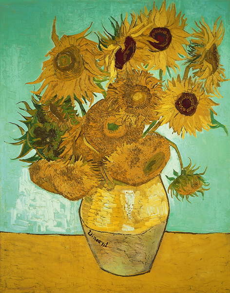
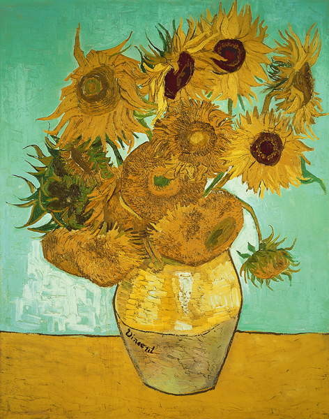

O mně

|
Jmenuji se Ludmila Bergmanová
Jsem činorodá, pohodová, přátelská a baví mě spousta věcí. Od
ručních prací přes vzdělávání, cestování, Jógu, Pilates, vaření a
pečení, péče o vnučky a minizahrádku na terase.
Poté, co mé tři děti odešly za vlastním dobrodružstvím, jsem si
našla čas na sebe a zahájila projekt vzdělávání. S
Czechitas pronikám do
světa IT, S Duolingem se
učím cizí jazyky a s vnučkami se učím být babičkou.
Zaujalo mě kódování a programování, čehož následkem je i tento
úkol.
|
Nahoru
Práce
Pracuji jako asistentka v malé společnosti.
Práce je rutinní a můj mini monitor mi ničí zrak, takže hledám alternativy. I když to není nic moc, platí mi účty a nezatěžuje hlavu. Ovšem největším plusem je pětiminutová vzdálenost od bydliště.
A protože jsem naprosto dekadentní, od jara do podzimu jezdím na skútru a ušetřím šest minut času.
Každé ráno vstávám ve 4:20. Nechci, ale ten kos, který už pět let vyzpěvuje na terase, má jiný názor.
Nahoru
Zájmy
Už jako dítě mě pohltily ruční práce. Dnes vlastním a používám čtyři šicí a dva pletací stroje. Co se týká šití, mám rozpracovanou velikou spoustu věcí v různých stádiích dokončení a vznešeně tomu říkám projekty. Vždycky se pro něco nadchnu a začnu.a ale mezitím mě zaujme něco jiného, takže klidně dokončuji najednou i desítku "projektů".
Přestože to moc neumím ráda kreslím a maluji akvarelem.
Kochám se na Pinterestu a když nemám zapnuté rádio s CR2, poslouchám relaxační hudbu.
Nahoru
Líbí se mi
Klasická hudba
Bachovo
Preludium
Bethovenova
Moonlight Sonata
Dvořákovo
Largo
Smetanova
Vltava Naše
tříletka miluje
Kočka leze dírou
od Wolfa Hoffmanna Operní
IlDivo
Liturgické
Gregorians
irské
Celtic Woman
Moderní hudba
hlavně sedmdesátky a osmdesátky
CCR,
Procol Harum,
ABBA,
Queen,
Disturbed,
Lara Fabian a
Sia.
Filmová hudba
vítězí Ennio Morricone
Mise na Mars,
a
Tajemství Sahary
a
Tenkrát na západě.
Hans Zimmer
Andělé a démoni
a
Gladiátor
ale James Horner a Klaus Badelt taky ujdou.
Filmy
Nemám oblíbený film. Babička říkala, že televize je zloděj času a nakazila mě tím, takže televizi téměř nezapínám. Ale když byly děti menší, běžela celodenně jako kulisa.
A můžu říct, že znám nazpaměť audio Hvězdné brány, Gillmorek, i Přátel. Většinou jsem u televize pletla jako

a neztrácela čas díváním na bednu.
Jediné, co jsem měla možnost vidět kompletně, byla Teorie velkého
třesku a díky dětem mám dlouhodobě v oblibě i HP sérii a filmy od
Marvela.
Nahoru
Pro vytvoření barevného schématu jsem využila
Paletton.
Tento web vznikl jako úkol v kurzu Czechitas - Staň se kodérkou - a části kódu, obrázky a hudba zapůjčené z různých webových stránek nejsou použity za účelem finančního zisku.
Nahoru


 
